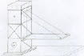
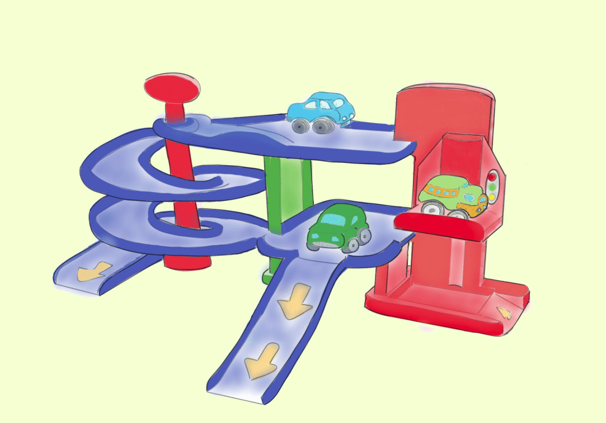

(Aunque nuestro proyecto será el Diseño y Construcción de un Puente levadizo,  veremos todo el proceso poniendo de ejemplo otro proyecto diferente para que os sirva de inspiración y seáis vosotros mismos los que consigáis diseñar el Puente).
En Tecnología siempre partimos de una necesidad o problema y buscamos soluciones a través de la construcción de un OBJETO TECNOLÓGICO.
Fíjate en este problema que planteamos:
"En la clase de cinco años de Infantil ha surgido un problema y le han pedido a nuestra tutora que ayudemos a nuestros compañeros.
En su aula tienen un rincón de juegos. Uno de los juguetes más solicitados es un garaje. Parece que se ha puesto de moda. El problema es que solo hay uno para toda la clase y, claro, no es suficiente.
Cedec. Garaje de juguete (CC BY-SA)
Hemos recibido una carta pidiéndonos que construyamos algunos garajes de juguete. También nos han dado unas indicaciones de cómo desean que lo hagamos. ¿Seremos capaces de construir garajes adecuados para los niños y niñas de cinco años? ¿Podremos diseñarlos, fabricarlos y realizar un acabado atractivo para ellos?
Construir esos garajes sería nuestro desafío en este proyecto. Seguro que, cuando terminásemos, además de lograr que se pongan muy contentos, ¡nosotros y nosotras nos sentiríamos muy bien por el trabajo realizado!". De hecho este proyecto fue realizado por alumnado del centro durante el curso 22/23 y fue presentado en Retotech y RobyCad. Aquí tenéis el resultado:
En nuestro caso, el problema o necesidad se plantea así:
"Nuestro profe de Tecnología dice que esta asignatura está relacionada con muchas otras y que para aprender a construir cosas tenemos que saber primero varios principios científicos de otras disciplinas. En concreto en Tecnología estudiamos Expresión gráfica, mecanismos, fundamentos de electricidad, electrónica y Robótica, así como las propiedades de los materiales de uso técnico y estructuras. Por ello, nos propone construir en el taller un objeto que nos ayude a iniciarnos en todas estas cuestiones. El problema concreto a resolver será cubrir la distancia entre las dos orillas de un río mediante la construcción de una maqueta de un puente". Dice que luego nos dará más detalles...
{kind=link}
Por supuesto, antes de comenzar a construir debemos diseñar el borrador del Proyecto, lo que llamaremos el Anteproyecto